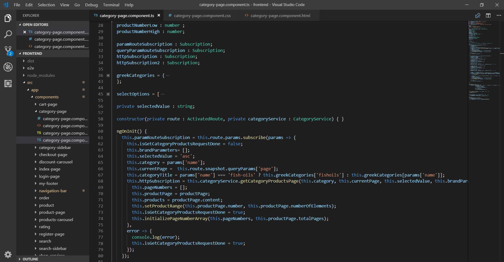

Angular - ανανέωση προϊόντων κατηγορίας
θα δημιουργήσουμε μια μέθοδο, που θα επιστρέφει τα προϊόντα της κατηγορίας, ανάλογα με τα φίλτρα και α προσαρμόσουμε τον CategoryApiController και το category-page, ώστε να ανανεώονται τα προϊόντα της κατηγορίας, όταν ο χρήστης επιλέγει κάποιο φίλτρο.
Spring Boot
Δημιουργούμε ένα model ProductPage, το οποίο είναι αντίστοιχο με το Page<Product> του Spring
public class ProductPage{
private List<Product> content;
private int totalElements;
private int totalPages;
private int number;
private int number;
public ProductPage() {}
//Getters - Setters ...
}
Προσθέτουμε την μέθοδο στο ProductService
package springeshop.service;
public interface ProductService{
...
ProductPage findByCategoryIdWithBrandAndPriceRange(Category category, List<Brand> brands, List<double[]> priceRanges, int page, String order);
}
Προσθέτουμε την μέθοδο στο ProductServiceImpl
Δημιουργούμε το query root
@Override
public ProductPage findByCategoryIdWithBrandAndPriceRange(Category category, List<Brand> brands, List<double[]> priceRanges, int page, String order){
CriteriaBuilder criteriaBuilder = entityManager.getCriteriaBuilder();
CriteriaQuery<Product> criteriaQuery = criteriaBuilder.createQuery(Product.class);
Root<Product> productsRoot = criteriaQuery.from(Product.class);
Δημιουργούμε συνθήκες του WHERE, "prod.category = :category", "prod.price between :range1 and :range2" και "prod.brand = :brand"
List<Predicate> brandPredicateList = new ArrayList<>();
List<Predicate> priceRangePredicateList = new ArrayList<>();
if(!brands.isEmpty()){
for(int i=0; i < brands.size(); i++){
brandPredicateList.add(criteriaBuilder.equal(productsRoot.get("brand"), brands.get(i)));
}
}
if(!priceRanges.isEmpty()){
for(double[] range : priceRanges){
priceRangePredicateList.add(criteriaBuilder.between(productsRoot.get("price"), range[0], range[1]));
}
}
Predicate[] brandsPredicateArray = new Predicate[brandPredicateList.size()];
brandPredicateList.toArray(brandsPredicateArray);
Predicate[] priceRangePredicateArray = new Predicate[priceRangePredicateList.size()];
priceRangePredicateList.toArray(priceRangePredicateArray);
Predicate brandsPredicate = criteriaBuilder.or(brandsPredicateArray);
Predicate priceRangePredicate = criteriaBuilder.or(priceRangePredicateArray);
Predicate categoryPredicate = criteriaBuilder.equal(productsRoot.get("category"), category);
Δημιουργούμε το κατάλληλο ερώτημα, ανάλογα με το αν είναι επιλέγμένα και τα δύο φίλτρα ή μόνο ένα.
if(!brands.isEmpty() && !priceRanges.isEmpty()){
criteriaQuery.where(criteriaBuilder.and(categoryPredicate, brandsPriceRangeAndPredicate));
}else{
if(brands.isEmpty()){
criteriaQuery.where(criteriaBuilder.and(categoryPredicate, priceRangePredicate));
else{
criteriaQuery.where(criteriaBuilder.and(categoryPredicate, brandsPredicate));
}
}
Ταξινομούμε τα προϊόντα με βάση την παράμετρο order, βρίσκουμε τον αριθμό των συνολικών προϊόντων και επιστρέφουμε την κατάλληλη σελίδα
Order orderCriterion = order.equals("asc") ? criteriaBuilder.asc(productsRoot.get("price")) : criteriaBuilder.desc(productsRoot.get("price"));
criteriaQuery.orderBy(orderCriterion);
ProductPage productPage = new ProductPage();
int totalProducts = entityManager.createQuery(criteriaQuery).getResultList().size();
int startProductPosition = page * 6;
productPage.setTotalElements(totalProducts);
productPage.setTotalPages(getProductPages(totalProducts));
List<Product> wantedProducts = entityManager.createQuery(criteriaQuery).setFirstResult(startProductPosition).setMaxResults(6).getResultList();
productPage.setContent(wantedProducts);
productPage.setNumber(page);
productPage.setNumberOfElements(wantedProducts.size());
return productPage;
Θα προσαρμόσουμε την μέθοδο getCategoryProducts του CategoryApiController.
@RequestMapping(value = "/categories/{name}", method = RequestMethod.GET)
public ResponseEntity<?> getCategoryProducts(@PathVariable((@value = "name") String name,
@RequestParam( (@value = "page", required = true) int page,
@RequestParam((@value = "order", required = true) String order,
@RequestParam((@value = "brand", required = false) String[] brands,
@RequestParam((@value = "range", required = false) String[] ranges){
Page<Product> products;
ProductPage filteredProductPage = new ProductPage();
...
Εάν δεν είναι επιλεγμένο κάποια φίλτρο, βρίσκουμε τα προϊόντα με τη μεθοδο findByCategoryId και τα επιστρέφουμε με status 200 OK
if(brands == null && ranges == null){
products = productService.findByCategoryId(category.getId(), PageRequest.of(page, 6, sortDirection, "price"));
addImagesAndQuantityToProducts(products.getContent());
if(!products.hasContent()){
return new ResponseEntity <>(HttpStatus.NO_CONTENT);
}
return new ResponseEntity <>(products, HttpStatus.OK);
Αλλιώς βρίσκουμε το ProductPage με τη μέθοδο findByCategoryIdWithBrandAndPriceRange και το επιστρέφουμε με status 200 OK.
else{
List<Predicate> brandList = new ArrayList<>();
List<Predicate> priceRangeList = new ArrayList<>();
if(brands != null){
brandList = brandService.findSpecificBrands(brands);
}
if(ranges != null){
for(String range : ranges){
rangeValues[0] = getRangeMin(range);
rangeValues[1] = getRangeMax(range);
priceRangeList.add(rangeValues);
}
}
filteredProductPage = productService.findByCategoryIdWithBrandAndPriceRange(category, brandList, priceRangeList, page, order);
if(filteredProductPage.getContent().isEmpty()){
return new ResponseEntity <>(filteredProductPage, HttpStatus.NO_CONTENT);
}
addImagesAndQuantityToProducts(filteredProductPage.getContent());
return new ResponseEntity<> (filteredProductPage, HttpStatus.OK);
Παράδειγμα αιτήματος με Postman
category-page component
Δημιουργούμε το component category-page και το τοποθετούμε στο φάκελο components. Το όνομα της κατηγορίας το παιρνάμε χρησιμοποιώντας ένα routerLink, το οποίο λέει στην Angular, να αλλάξει route.
<a class="nav-link" routerLink="/category/{{category.englishName}}">{{category.greekName}}</p></a>
ng generate component category-page
Θα χρησιμοποιήσουμε τη μέθοδο getCategoryProductsPage() του ProductService, για να πραγματοποιήσουμε το HTTP αίτημα και να πάρουμε το προϊόντα.

Κάθε φορά που αλλάζει ο χρήστης κατηγορία, παίρνουμε το όνομα της κατηγορίας από το route και πραγματοποιούμε το HTTP αίτημα, για να πάρουμε τα προϊόντα.
category-page.component.ts
category-page.component.html
Εισάγουμε τα template <navigation-bar> και μετά εμφανίζουμε τον τίτλο της κατηγορίας. Μετά, στην αριστερή στήλη τοθετούμε το template <category-sidebar> του CategorySidebarComponent, το οποίο θα δημιουργήσουμε μετά και στην δεξιά <product-item> templates, για να εμφανίσουμε τα προϊόντα. Τέλος, εισάγουμε τα template <my-footer>

category-page.component.css

Τελική εμφάνιση σελίδας